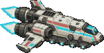
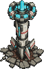

ZOMBIE OVERLOAD
SURVIVE THE HORDE
兩座戰場，同一場生存挑戰。撐過 10 分鐘，擊倒最終巨獸。

戰艦從畫面一角斜飛到對角，經過頭頂時往地面發射衝擊波，清掉整個畫面。

巨砲從外太空插進地面，朝 360° 連續散射砲彈，掃平整個畫面。
測試參數：?n=3000&stress&god&skills=0 純屍群壓測 · &bot&auto 無人自動跑 · &fx=low|mid|high 鎖定畫質 · &t=240 從第 4 分鐘開始
?n=3000&stress&god&skills=0
&bot&auto
&fx=low|mid|high
&t=240
請將裝置橫放